| 題 | 選項 | 建築版本（計劃總表） | 類別 |
|---|
Q01
荷物の受け取り予定が急に変わったら、どうする？ | A「配達スタッフに相談する。」 | AUTO HUB −1 人手窗口（驗收） | 有模型 |
| B「AIの提案から、自分で選ぶ。」 | AUTO HUB 0 人機協作（驗收） | 有模型 |
| C「AIに時間や受け取り場所を決めてもらう。」 | AUTO HUB +1 全自動＋無人機（驗收） | 有模型 |
Q02
お台場に新しい自動運転の水上バスが登場した。どうする？ | A「使い慣れた従来の便に乗る。」 | 水の棚田 q02a-hydro-terrace（驗收，已接 Q02-A） | 有模型 |
| B「利用者の評判を見てから試す。」 | 蓮花受電 bay-flower-receiver（驗收，已接 Q02-B；連岸邊機房平台） | 有模型 |
| C「早速、新しい便に乗ってみる。」 | 受電テラス農園 rectenna-farm-canopy（驗收） | 有模型 |
Q03
たまに使う小型の乗り物が必要になった。どうする？ | A「自分専用のものを持つ。」 | 車抽屜住宅 drawer-housing-2127（驗收，已接 Q03-A） | 有模型 |
| B「同じ建物の住民と共有する。」 | 集合住宅共用車棚（無） | 空置（地塊已定） |
| C「地域の共有サービスを使う。」 | 地區共享交通樞紐＋公園轉用（無） | 空置（地塊已定） |
Q04
街のAIが、あなたの好みを覚えるとしたら？ | A「記録してほしくない。」 | 公共案內塔（無） | 未有模型及地塊 |
| B「必要なときだけ情報を使ってほしい。」 | 會形成路線的地面（無） | 未有模型及地塊 |
| C「覚えて、便利な案内に役立ててほしい。」 | 個人案內閘門（無） | 未有模型及地塊 |
Q05
真夏のお台場を歩くなら、暑さにどう対応したい？ | A「涼しい時間帯に出かける。」 | 樹蔭與海風街區（舊環境軸部分資產，未打磨） | 未有模型及地塊 |
| B「植物や木陰のある道を歩く。」 | 植物外牆建築（住宅 P 植物膜可參考，未打磨） | 未有模型及地塊 |
| C「温度を調整できる歩道を利用する。」 | 可動遮陽＋局部冷卻（舊環境軸帆／冷卻塔，未打磨） | 未有模型及地塊 |
Q06
長く使った家具が古くなった。どうする？ | A「新しい家具に買い替える。」 | 新素材建築（住宅 M 輕材可參考） | 空置（地塊已定） |
| B「修理して使い続ける。」 | 蛋艙塔 pod-frame-tower-2127（驗收 R4，2026-11-19 放於住宅 U 舊址） | 有模型 |
| C「今の家具を誰かに譲り、別の中古品を使う。」 | 模組回收＋重組據點（住宅 U 交換骨架可參考） | 空置（地塊已定） |
Q07
日用品を買うとき、どう受け取りたい？ | A「店へ行き、実物を見て買う。」 | 往商業設施的移動步道（無） | 未有模型及地塊 |
| B「近くの受け取り拠点で受け取る。」 | 鄰里收件塔（無） | 未有模型及地塊 |
| C「自宅まで届けてもらう。」 | 外牆搬運路＋自動配送中心（無；與 Q01-C 主題重疊） | 未有模型及地塊 |
Q08
お台場で休日を過ごすなら、どんな場所が使いやすい？ | A「いつも同じ用途で使える施設。」 | 固定用途常設館（無） | 空置（地塊已定） |
| B「イベントによって用途が変わる施設。」 | 內部可重組多用途館（無） | 空置（地塊已定） |
| C「イベントに合わせて場所も変わる施設。」 | 活動模組棚 event-shelf-2127（驗收，已接 Q08-C） | 有模型 |
Q09
仕事が早く終わって、自由な午後ができたら何をしたい？ | A「買い物や用事を済ませる。」 | 公共服務設施（SE +1 塔用途接近，但外形是集中塔） | 未有模型及地塊 |
| B「友人と集まり、街で過ごす。」 | 交流文化廣場（SW COMMONS 開放廣場可參考） | 未有模型及地塊 |
| C「普段できない体験を楽しむ。」 | 沉浸式巨型穹頂（無） | 未有模型及地塊 |
Q02 お台場に新しい自動運転の水上バスが登場した。どうする？ 技術受容性
| 地塊方式與位置 | 城市接線／三態 |
|---|
各有地塊：西岸海面 (−375, −170)／南部公園西岸外海，花中心 (−712, 300)，機房平台接西岸步道（owner 2026-11-18，feat/bay-flower-placement 的選址交接）／南緣陸地 FARM_CENTRE (−152, 408) | 城市已接（lotRuntime，2026-11-19）；A、C 空置態 owner 2026-11-19 接受（A 整島收起、C 無農園），離場與出場同時淡出淡入；近鏡及旅程著陸已做（2.5），owner 2026-11-19 接受 |
Q02-A 有模型，起始版本（暫定）
- 選項
- 「使い慣れた従来の便に乗る。」
- 建築版本（計劃總表）
- 水の棚田
q02a-hydro-terrace（驗收，已接 Q02-A）
模型 ID：q02a-hydro-terrace；地塊：q02-west-sea
- 由 B 換入：結果卡
- あなたは、使い慣れた暮らしを大切にしました。
お台場の西岸の海に、水の棚田が戻りました。
地點標示：西岸の水の棚田 - 由 C 換入：結果卡
- あなたは、使い慣れた暮らしを大切にしました。
お台場の西岸の海に、水の棚田が戻りました。
地點標示：西岸の水の棚田
- 設施卡
- 此選項尚未有專用設施卡。
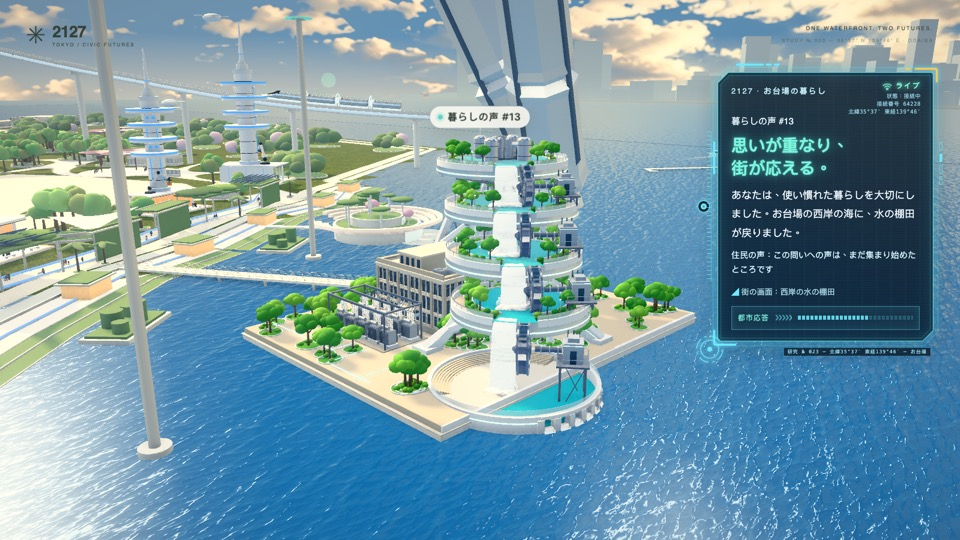
實時結果（日，換入後約 10 秒）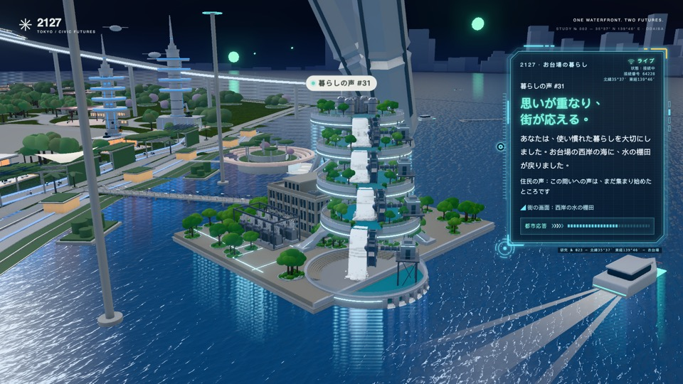
實時結果（夜，換入後約 10 秒）Q02-B 有模型
- 選項
- 「利用者の評判を見てから試す。」
- 建築版本（計劃總表）
- 蓮花受電
bay-flower-receiver（驗收，已接 Q02-B；連岸邊機房平台）
模型 ID：bay-flower-receiver；地塊：q02-bay-flower
- 由 A 換入：結果卡
- あなたは、評判を確かめてから新しい技術を試す暮らしを選びました。
南部公園の沖に、宇宙からの光の柱を受ける湾の花が開きました。
地點標示：南部公園沖の湾の花 - 由 C 換入：結果卡
- あなたは、評判を確かめてから新しい技術を試す暮らしを選びました。
南部公園の沖に、宇宙からの光の柱を受ける湾の花が開きました。
地點標示：南部公園沖の湾の花
- 設施卡
- 此選項尚未有專用設施卡。
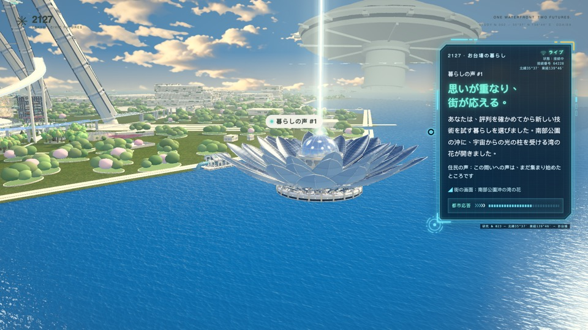
實時結果（日，換入後約 10 秒）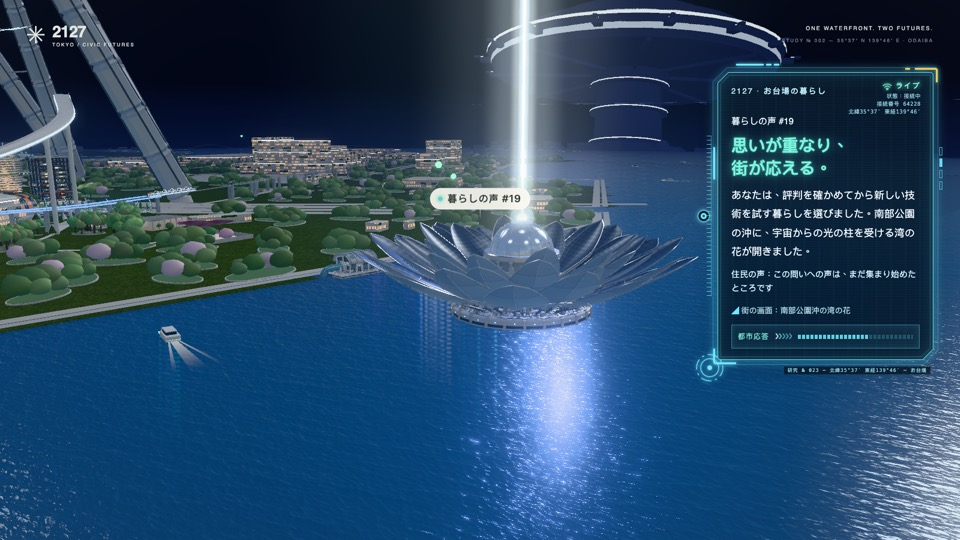
實時結果（夜，換入後約 10 秒）Q02-C 有模型
- 選項
- 「早速、新しい便に乗ってみる。」
- 建築版本（計劃總表）
- 受電テラス農園
rectenna-farm-canopy（驗收）
模型 ID：rectenna-farm-canopy；地塊：q02-farm-south
- 由 A 換入：結果卡
- あなたは、新しい技術をすぐに試す暮らしを選びました。
お台場の南側に受電テラス農園が加わり、膜の下に斜路で訪ねられる畑ができました。
地點標示：受電テラス農園 - 由 B 換入：結果卡
- あなたは、新しい技術をすぐに試す暮らしを選びました。
お台場の南側に受電テラス農園が加わり、膜の下に斜路で訪ねられる畑ができました。
地點標示：受電テラス農園
- 設施卡
- 空の電気を受け取るテラス農園
膜で軌道からのマイクロ波を受け、電気に変えて街に届けます。膜の下では、斜路を通って段々畑を訪ねられます。
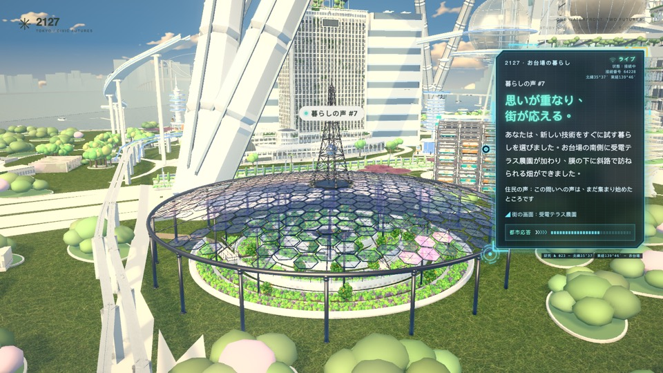
實時結果（日，換入後約 10 秒）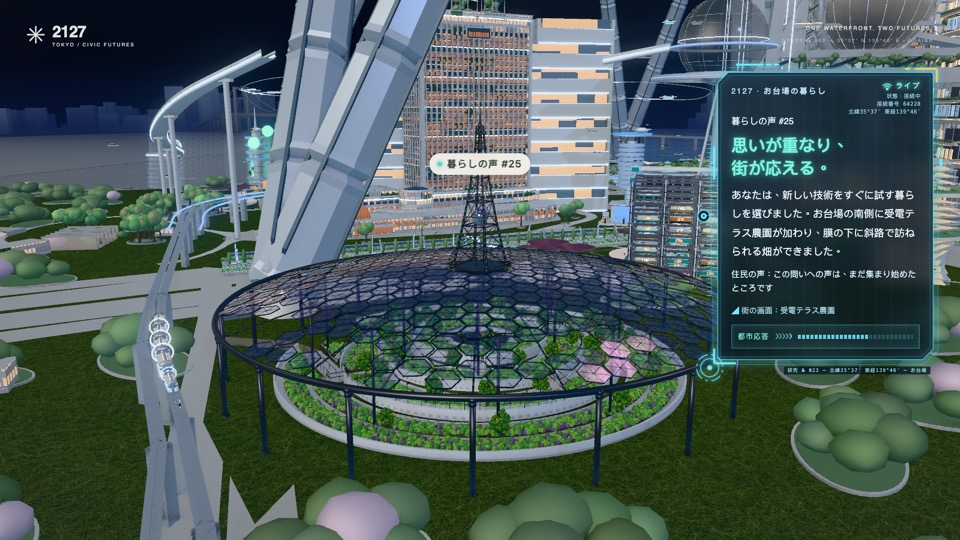
實時結果（夜，換入後約 10 秒）居民情景：受電テラス農園 — 葵（アオイ）
狀態：葵：DEV 演示待驗收，交接；下一步：審閱落種同單格復現日照
| 實際變化 | 台詞（字幕） | 行動 | 得／失 |
|---|
| 陸上農園 DEV 演示 | あの日の陽ざしを借りて、この種をもう一度。 | 西入口先交代步道、碎石支路、取苗架與坡道。近鏡見葵攤手撒下一撮種子。鏡頭拉遠，看到一格六角板亮起，光束從板下延伸至本畦，鄰樹仍在當天的自然光下。 | 得：可借舊日日照育苗；農園佔用南岸一片土地。 |
受電テラス農園 R3 實景 建築已驗收
台場南岸的虹彩六角天幕接收軌道電力，坡道把公共步道、菜床及退台連在一起。故事設定見天氣圖書館。
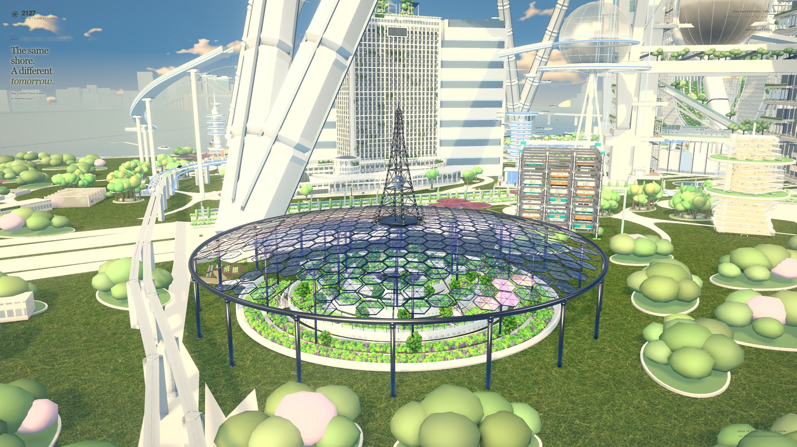
日景｜六角受電天幕覆蓋同心退台
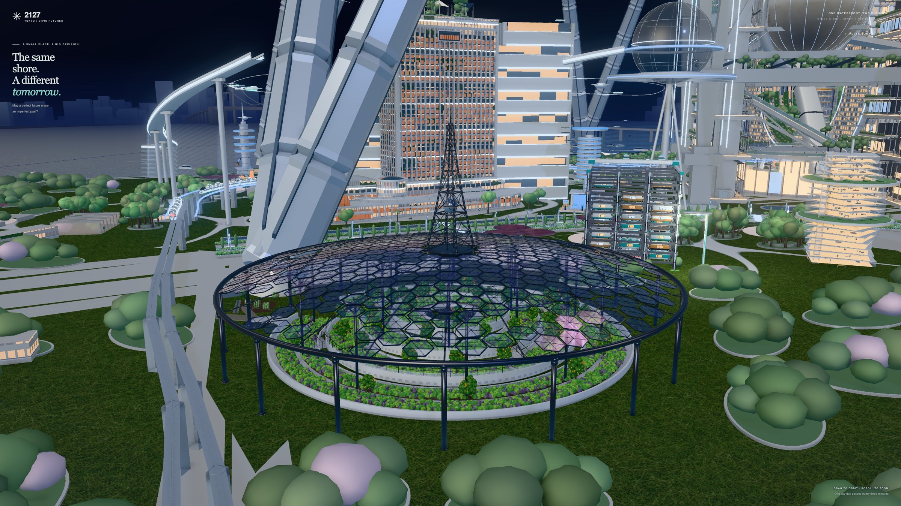
夜景｜從南岸看夜色中的天幕與農園
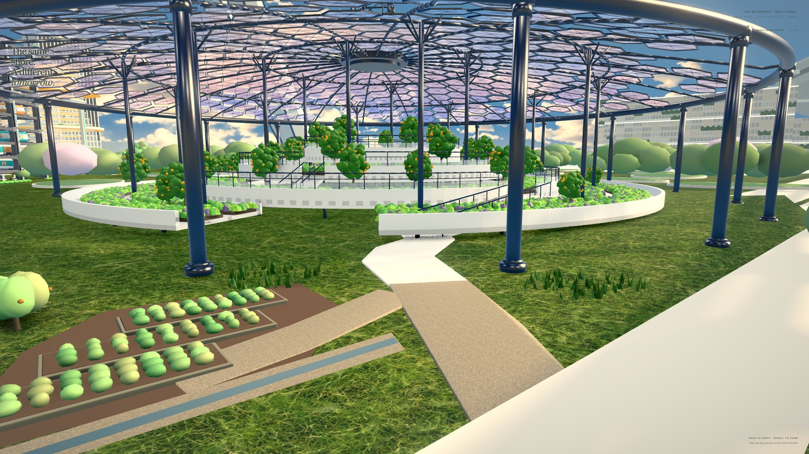
西入口 R3｜當時的露天菜床與坡道
葵與西坡道 R3 居民段落為 DEV 實景
碎石前地接上原西坡道。兩條行走帶上坡後匯入水平平台，再轉入露台內的走道。Gemini 目標圖與 R2 實景
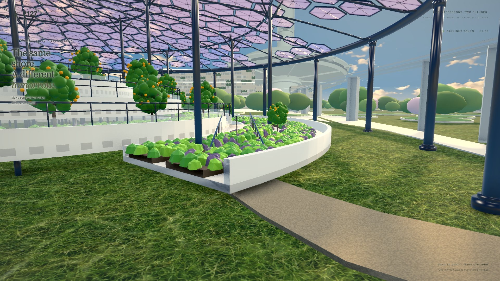
同鏡頭・修改前｜外圈底板及菜槽橫跨入口
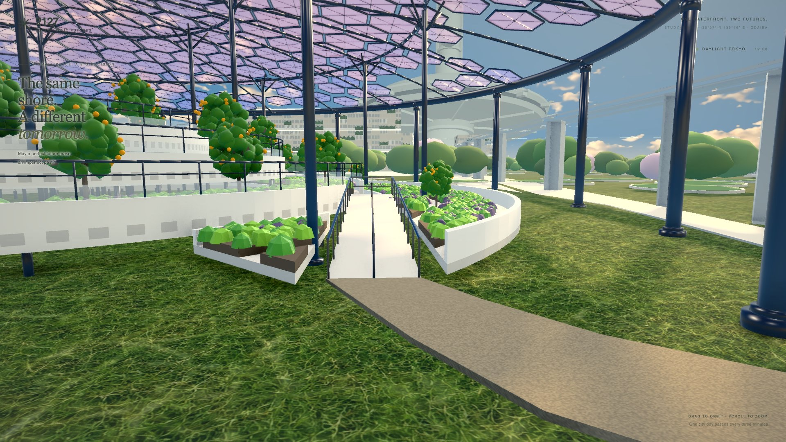
同鏡頭・修改後｜打開外圈底板及菜槽
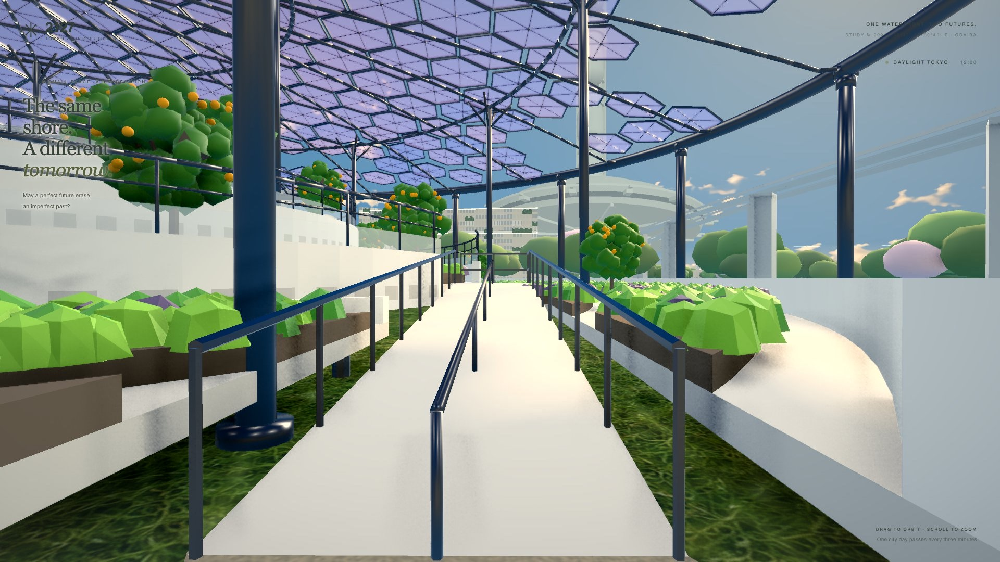
行人視角｜碎石接縫與原有欄杆
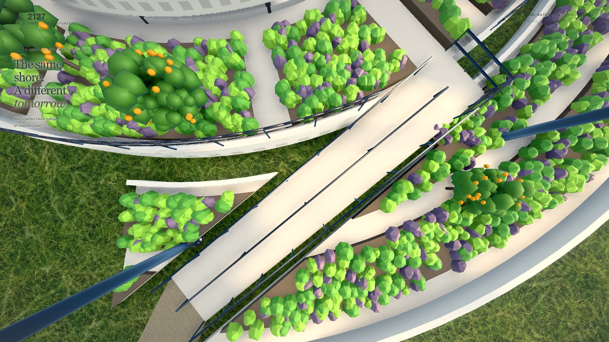
俯視｜兩條行走帶通往水平平台
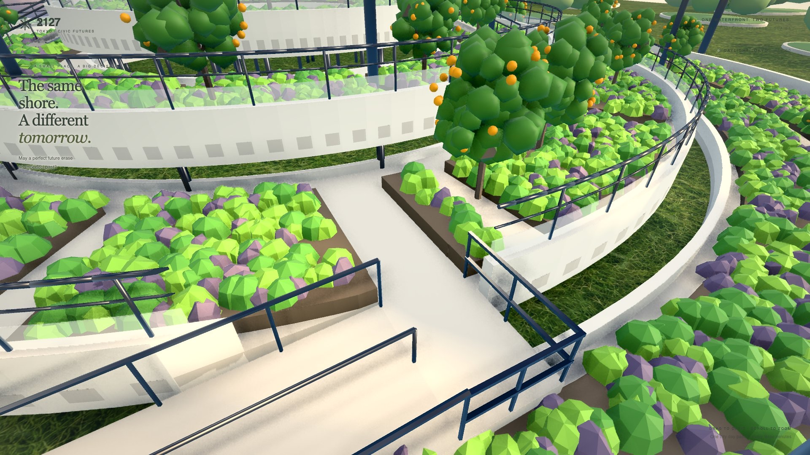
上端｜沿平台側面轉入露台
葵借回那一天的陽光 DEV 演示・鏡頭打磨已驗收
約 11 秒、四個鏡頭，於動作上剪接：西入口全景；中景中葵抬頭望天幕，托起種子後撒下；種子落地時切至天幕全景，一格六角板亮起，暖光照到本畦；最後以胸口高度的中近景收結，葵抬頭望光，字幕在此鏡頭出現。以下定格隱藏字幕。
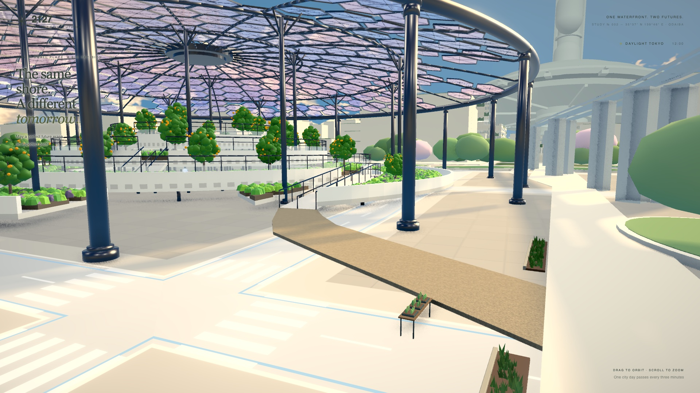
S1 入口全景｜0–2.4 秒
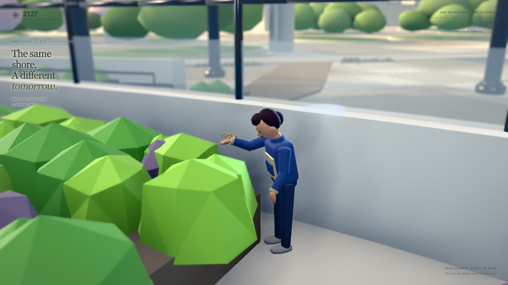
S2 撒種｜2.4–5.7 秒
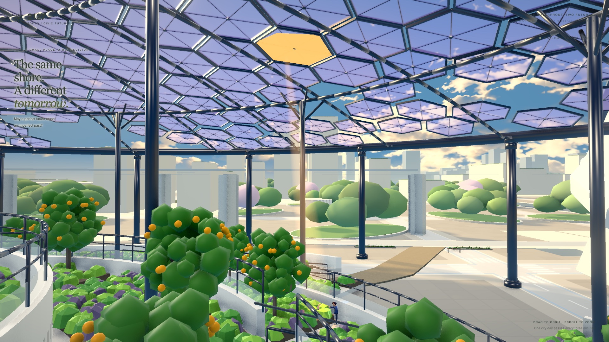
S3 亮板與光束｜5.7–8.6 秒
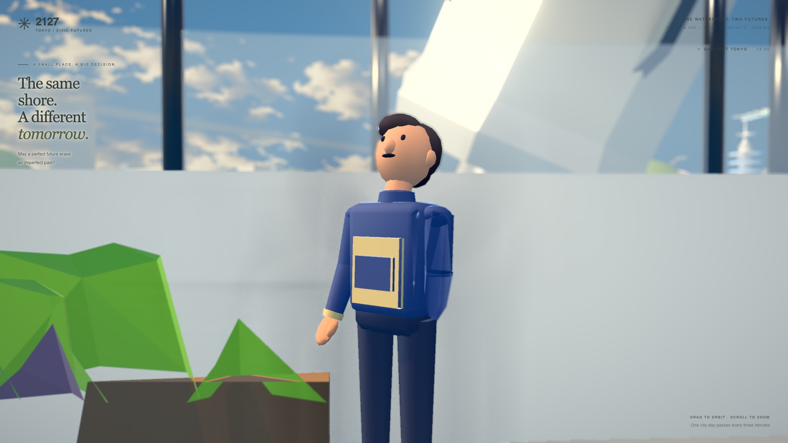
S4 抬頭望光｜8.6–11 秒